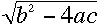

-
Δοκιμάστε το
παρακάτω
test. Όταν τελειώσετε δείτε αν
οι απαντήσεις είναι σωστές ή όχι. Δείτε για πιο λόγο
κάποια απάντησή σας ήταν λάθος. Μπορείτε να σβήσετε
όλες τις απαντήσεις και να δοκιμάσετε και πάλι.
-
Κατεβάστε το πρόγραμμα
constvar.f
. Για να το κατεβάσετε
κάντε click
με το ποντίκι πάνω στo
link
και μετά save. Το
πρόγραμμα αυτό σας ζητά 3 ακέραιους και 3
πραγματικούς αριθμούς καθώς και 2 μεταβλητές
χαρακτήρων. Κατόπιν αφού τυπώσει τις τιμές που
δώσατε, θα εκτελέσει κάποιες απλές πράξεις και θα
τυπώσει τα αποτελέσματα. Ανοίξτε το
file και δείτε τις εντολές
του προγράμματος. Κάνετε
compilation (η εντολή που θα πρέπει να
πληκτρολογήσετε είναι: g77 -o
constvar.x constvar.f) και τρέξτε το
executable που θα πάρετε (
./constvar.x )
-
Με βάση το προηγούμενο πρόγραμμα,
γράψτε τώρα ένα δικό σας το οποίο δέχεται 4
πραγματικούς αριθμούς (a,b,c,d)
και 2 ακέραιους (i,j)
από το πληκτρολόγιο και κατόπιν τυπώνει στην
οθόνη τα αποτελέσματα των ακόλουθων πράξεων: (α)
z = (a+b)/(c+d) (b) z = a+b/(c+d)
(c) z = (a+b)/c + d, (d) k = i/j και
(e) z = 4**(i/j).
Δοκιμάστε να δώσετε τις ακόλουθες τιμές: α =
10, β = 3.4, c
= 12,
d =
2,
i = 1 και
j = 2.
Νομίζετε ότι το αποτέλεσμα των δυο τελευταίων
πράξεων (d) και
(e) (μεταξύ των ακεραίων)
είναι σωστό; Καταλαβαίνετε τι πρόβλημα
υπάρχει;
-
Δοκιμάστε να γράψετε ένα
πρόγραμμα που να υπολογίζει την τιμή 2**3**2
-
Γράψτε ένα πρόγραμμα που να κάνει
το ακόλουθα: Nα διαβάζει 2
πραγματικούς αριθμούς. Υπολογίστε την διαφορά μεταξύ
του πρώτου αριθμού στο τετράγωνο και του δεύτερου
στο τετράγωνο. Γράψτε τα 2 νούμερα, τα τετράγωνά
τους και την διαφορά τους.
-
Kάντε copy
το ακόλουθο αρχείο
circle.f. Kάντε
edit το αρχείο και αλλάξτε
την ακτίνα. Recompile και
τρέξτε το.
Αλλάξτε τώρα το πρόγραμμα ώστε να δέχεται την ακτίνα
από το πληκτρολόγιο. Recompile
και rerun
-
Γράψτε ένα
πρόγραμμα που να μετατρέπει βαθμούς Κελσίου σε
Φαρεναϊτ και τους Φαρενάϊτ πάλι σε Κελσίου και να
τυπώνει στην οθόνη τις δύο θερμοκρασίες. Η σχέση που
συνδέει τις δύο κλίμακες
θερμοκρασίας είναι: degF = (9/5)*degC + 32.
Αν το πρόγραμμά σας είναι σωστό τότε θα πρέπει να
πάρετε στην δεύτερη μετατροπή την θερμοκρασία που
δώσατε αρχικά. Πηγαίνει κάτι λάθος; Μπορείτε να
δείτε τι φταίει;
Συγκρίνετε με το πρόγραμμα
temp.f
-
Γράψτε ένα
πρόγραμμα που τυπώνει τις τετραγωνικές ρίζες των
αριθμών από 1 έως 5.
-
Πάρετε το αρχείο
rdemo1.f .
Σώστε το και αφού το κάνετε
compile, τρέξτε 2 φορές με
νούμερα 12345 και 1234567. Καταλαβαίνετε τι βλέπετε?
Ξανατρέξτε το με τιμή 123456789 σαν
input. Μπορείτε να καταλάβετε τι γίνεται?
-
Πάρετε τώρα το αρχείο
rdemo2.f
To
αρχείο αυτό είναι σα το προηγούμενο μόνο που
τώρα διαβάζει ένα νούμερο σα REAL
και μετά το μετατρέπει σε
INTEGER. Tρέξτε το
πρόγραμμα πολλές φορές δίνοντας αρχικά ένα
9-ψήφιο
integer.
Συνεχίστε να δίνετε μεγαλύτερους αριθμούς
ώσπου κάτι ενδιαφέρον συμβαίνει. Τι? Συνεχίστε να
δίνετε μεγαλύτερα νούμερα. (καλό να τα δώσετε σε
επιστημονική μορφή σήμανσης π.χ. 3Ε15)
-
Γράψτε ένα
πρόγραμμα που παίρνει 3 αριθμούς από το πληκτρολόγιο
τους ονομάζει a,b,c
υπολογίζει την εξίσωση
.
Το πρόγραμμα θα αποτύχει αν η υπόριζος ποσότητα
είναι αρνητική. Θα δούμε αργότερα πως μπορούμε να
εξετάσουμε την περίπτωση που η αριθμητική πράξη
δίνει μη επιτρεπτά αποτελέσματα.